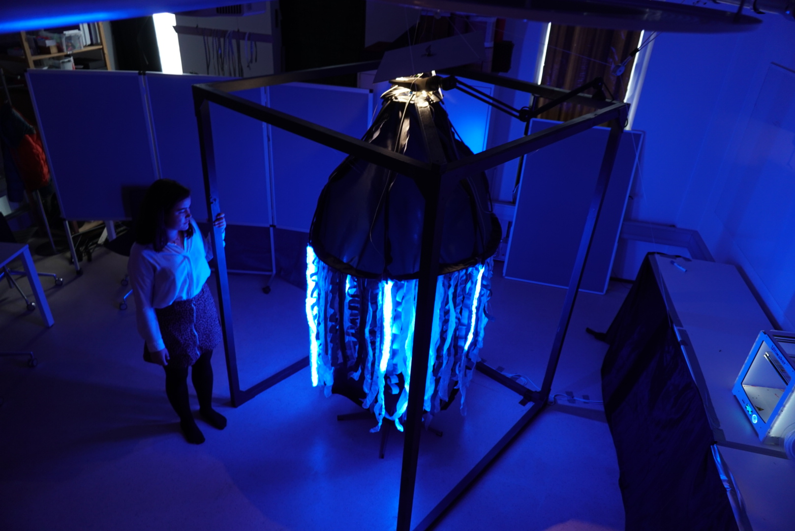

Somaesthetic interaction design
An overview of the complete installation.
Being underwater gives a quiet seperation from the often noisy world we live in. The water separates and distorts our senses making the noise, weigh and sight change. This opens up the possibilly of exploring the human bodily sensations in a different way.
Jellyfish are found in waters all over the world, from the very surface of the deep sea. The further into the dark, the brighter the colors of the medusozoa. Their slow movements and facinating bodily composition creates a mesmerizing visual stimulation. This creates the foundation for our installation.
Hello